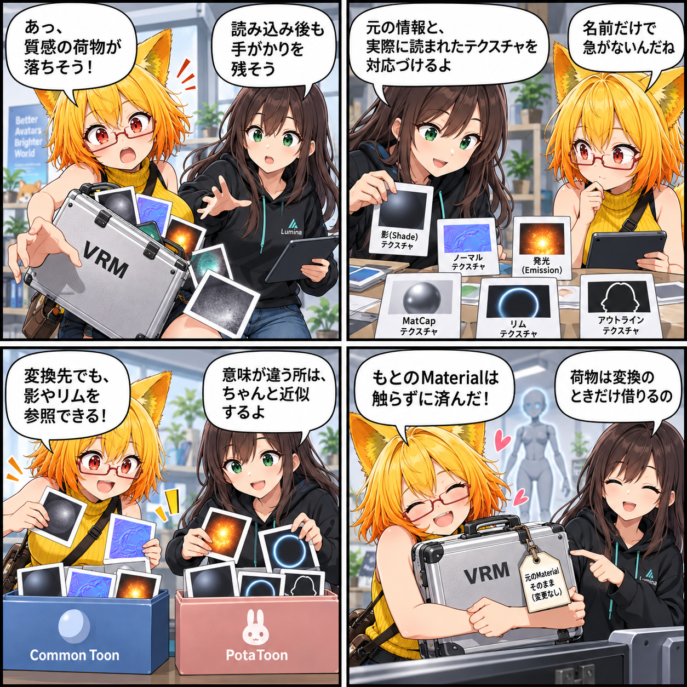

もとの質感を、変換先まで連れていく日
VRM 0.xを直接読み込むと、元のMToonマテリアル情報が簡略化される場合があります。そこで、元の情報と実行時テクスチャを保持し、Common Toon / PotaToonの変換に利用できるようにしました。

読み込み後に消えやすい手がかりを残す
VRM 0.xのファイル内ではVRM/MToonだったマテリアルが、ランタイム読み込み後には別のシェーダーとして扱われることがあります。そのままでは、Common ToonやPotaToonへの変換時に、元の影・発光・輪郭などに関する手がかりを十分に参照できません。
直接VRMを読む経路でUniVRMのマテリアル生成を観測し、元のマテリアル定義と実行時に解決されたテクスチャを対応付けるようにしました。元の表示用Materialは書き換えず、変換先を作るときだけこの情報を利用します。
テクスチャも、意味を確認して渡す
Common Toonでは、VRM0由来の影、法線、発光、MatCap、リム、輪郭幅のテクスチャと、Offset / Scaleを復元できるようにしました。古いMToonの影や間接光の数値も、MToon10側で意味が合うよう変換します。
PotaToonも同じVRM0メタデータと実行時テクスチャを利用し、影・法線・発光・MatCap・リム・輪郭を対応するプロパティへ変換します。完全に同じ意味を持たない項目は、単純な名前コピーで見た目を壊さないよう、明示的な近似として扱います。
ほかにも進んだこと
同じ期間には、弱い単色Emissionを暗所補償として判定して抑え、意図されたEmission Texture / Maskは維持する互換性改善も行いました。また、撮影向けの複合スクリーンエフェクトプリセットを共通管理する土台も追加しています。
この日記で記しているのは集計期間内にコミットされたコードの内容です。日記制作時点でUnity実行、VR実機、性能計測、リリース確認は行っていません。
4コマの裏話
ファイルを通るうちに置いていかれそうな「質感の荷物」を、ラベルを確かめながら変換先へ運ぶ寸劇です。実際のアプリ画面や実行結果ではありません。
まとめ
VRM 0.xを直接読み込む際、元のマテリアル情報とUniVRMが解決した実行時テクスチャを保持し、Common Toon / PotaToonの変換に利用できるようにしました。元Materialを変更せず、変換時に必要な手がかりを増やす対応です。
本日のひとこと
質感の荷物も、変換先まで一緒に。